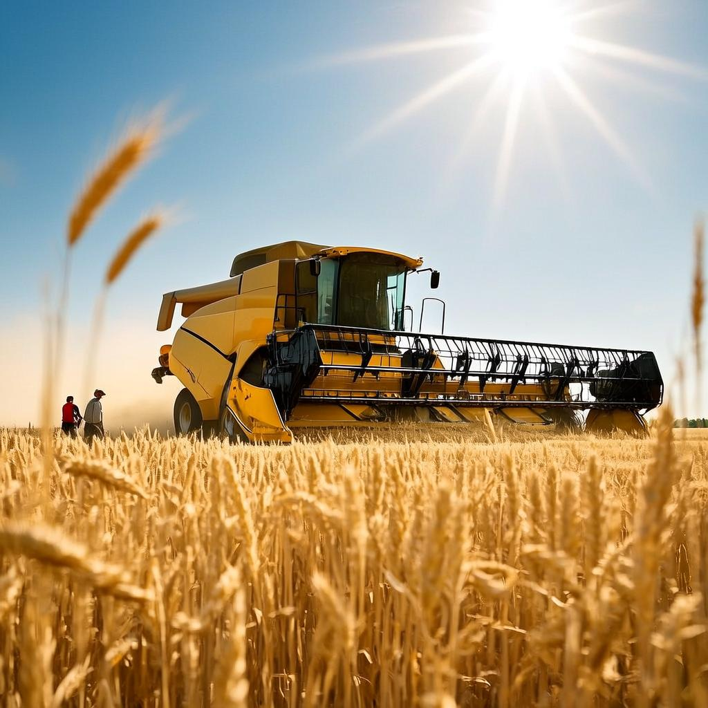
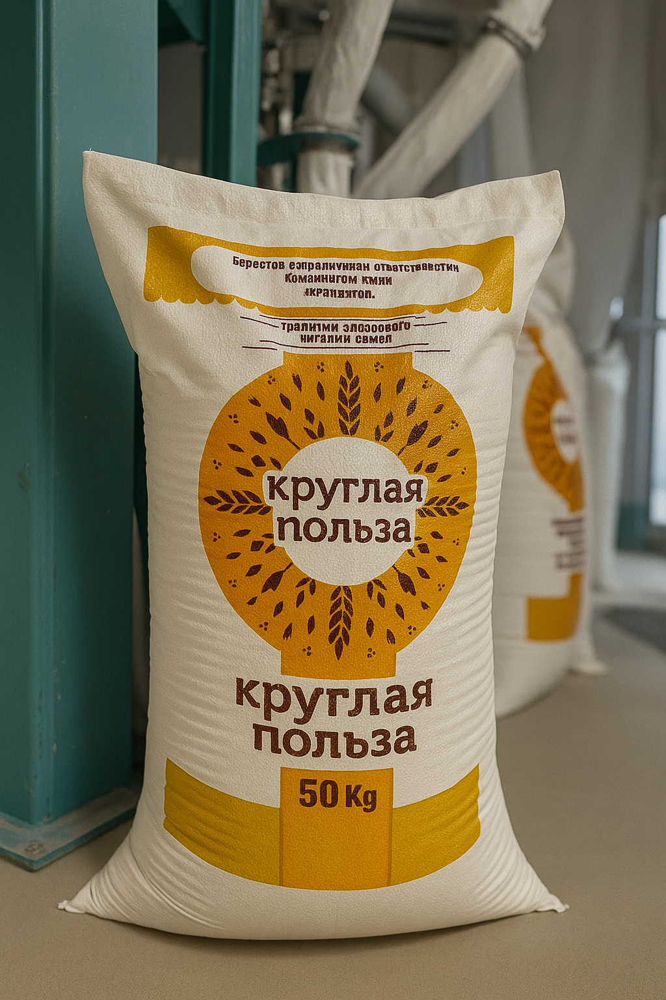

ООО «Каспий Агро»
ООО «Каспий Агро» — динамично развивающаяся агроторговая компания, успешно работающая на рынке более 5 лет. Основным направлением деятельности компании является оптовая продажа высококачественной муки и отрубей, производимых на российских мукомольных предприятиях, с последующей поставкой в страны Средней Азии, включая Казахстан, Узбекистан и другие перспективные рынки.
Мы специализируемся на обеспечении стабильных поставок зернопродуктов, соответствующих всем стандартам качества, предлагая выгодные условия сотрудничества как крупным, так и средним предприятиям пищевой и перерабатывающей промышленности.
Благодаря надежной логистике, индивидуальному подходу к каждому клиенту и глубокому знанию региональных особенностей рынка, «Каспий Агро» зарекомендовала себя как ответственный и профессиональный партнер.
Наша цель — способствовать развитию агробизнеса в регионе, обеспечивая доступность качественного сырья и строя отношения на принципах доверия, прозрачности и долгосрочного сотрудничества.